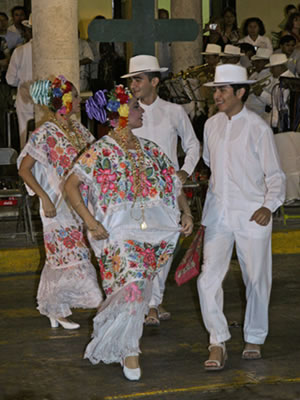

La guayabera: cómoda, fresca y elegante 
Tal vez no haya prenda de vestir tan universal como la guayabera, chaquetilla usada por los hombres desde hace varias generaciones en muchas islas del Caribe y en los países latinoamericanos.
El origen de la guayabera
El uso de la guayabera está muy extendido. Esta prenda, que antes era con frecuencia de lino y ahora es, por lo general, de algodón, forma parte de la cultura hemisférica hasta tal punto que no se sabe a ciencia cierta cuál es su origen.
Se cuenta que en el siglo XVIII, un rico terrateniente de Granada, España, se radicó en Cuba. Pronto empezó a quejarse de que su vestimenta acostumbrada era demasiado calurosa para el clima tropical de la isla, y mandó que le hicieran una especie de chaqueta ligera de tela fresca con cuatro bolsillos. Según algunos cubanos, ésa fue la primera guayabera.
La prenda le resultó tan práctica que fue adoptada por sus vecinos de Sancti Spíritus, ciudad a unos 370 kilómetros de La Habana. Ésta era también una zona donde se daban las guayabas que servían de comida de animales. Algunos habitantes de la cercana ciudad de Trinidad se burlaban de los de Sancti Spíritus llamándoles guayaberos, como si fueran ellos los que se alimentaban de guayabas y no los animales. Fue así que la prenda que usaban los guayaberos empezó a llamarse guayabera, o por lo menos ése es el cuento.
Las guayaberas actuales
Igual que la guayabera original, la actual es ajustada como una chaqueta de safari y se lleva por fuera del pantalón. Suele ser blanca, pero también las hay beige, azules, grises y de otros colores claros. Tiene alforcitas que van de arriba abajo en el frente y en la espalda, o un bordado en hilo del mismo color de la tela en lugar de las alforzas del frente. Las costuras laterales quedan abiertas en la parte de abajo para dar libertad de movimiento. La guayabera tiene botoncitos en muchos lugares donde no hay nada que abotonar; si tiene bolsillos, dos van en el pecho y dos